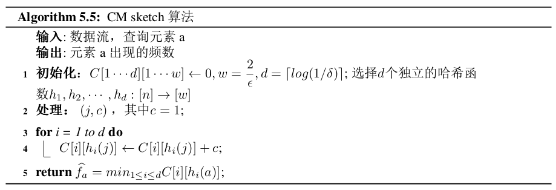

数据流模型
数据流特征：
- 数据总量不受限制
- 数据到达速率快
- 数据到达次序不受约束
- 除非刻意保存，否则每条数据只能访问一次
动态数据流算法面临的挑战：
- 实时性
- 低空间复杂度
- 结果准确性
- 适应性 — 多流应用场景中，设计适应性算法，根据各个数据流的变化及时调整算法参数
数据流子模型：
数据流是如下的一个数据序列： \[ \mathcal{S} = s_1, s_2, \dots ,s_m, \dots \] 每一个数据项Si都是全集U中的一个元素，并且\(|U|=n\). 一个数据流算法把\(\mathcal{S}\)作为一个输入并且需要计算\(\mathcal{S}\)上的函数 f. 通常情况下，这些数据只能以“流式”访问，比如，我们不能以另一种顺序访问输入的数据流，并且，绝大多数情况下每个数据项只能访问一次.
考虑一个n维向量\(\mathbf{A}=<A[1],A[2],\dots,A[n]>\)，在时刻 0 初始化为\(\mathbf{0}\)向量，即对任意i，有\(A_0[i]=0\)，且其在时刻 t 的状态为\(\mathbf{A}_t = <A_t[1],A_t[2],\dots,A_t[n]>\). 对向量\(\mathbf{A}\)的更新以二元组流的形式出现，即对于 t 时刻的更新\((j,c_t)\)，有\(A_t[i] = A_{t-1}[i] + c_t\)，如果\(i=j\)，否则的话\(A_t[i]=A_{t-1}[i]\).
通常有下面三种模型：
时间序列模型Time-Series Model — 每个数据项按照时间顺序到达，这种情况下j=t，即到达的更新为\((t,c_t)\)，此时有\(A[i]=s_i\)，即每到达的数据都是一个新的数据项，直接将其添加至向量\(\mathbf{A}\)中.
收银机模型Cash Register Model — 到达的数据项si是Ai的增量. 此时到达的更新\(s_i = (j,c_t)\)，且ct>0，这表示对同一属性的数据的相加，此时有 \[ \begin{align*} A_t[i] = \left\{ \begin{array}{ll} \quad A_{t-1}[i] + c_t, & if \quad j = i \\ \quad A_{t-1}[i] , & otherwise. \end{array} \right. \end{align*} \]
个人理解：对于新到达的更新\((j,c_t)\)，如果j已经在向量A中了，那么对\(A[j]\)增加ct，否则的话向量A中新增一个维度\(A[j]\).
对应于该模型的名字来讲，就是收银机对于到达的相同面值的纸币将其数量增加1，否则增加一种新的面值的纸币.（ct通常为1）
十字转盘模型Turnstile Model — 到达的数据项 si 是Ai 的更新，可能增加也可能减少. 对于此时到达的更新\(s_i=(j,c_t)\)，表示对同一属性的数据的更新，此时有 \[ \begin{align*} A_t[i] = \left\{ \begin{array}{ll} \quad A_{t-1}[i] + c_t, & if \quad j = i \\ \quad A_{t-1}[i] , & otherwise. \end{array} \right. \end{align*} \] 其中ct 可能为正可能为负.
对于每次到达的更新，对同一属性的数据可能增加也可能减少，来源于地铁站中的十字转门，通过此转门，地铁站中的人员可能增多也可能减少.
除了按照向量A的不同变化分为以上三组外，还可以根据数据流中各个元素的重要性划分为三种子模型：界标模型Landmark Model，滑动窗口模型Sliding Window Model，衰减窗口模型Damped Window Model.
- 界标模型 — 仅考虑从某一特定时间点 t 开始到当前时间点 d 之间即 \([t\dots d-1]\) 的所有数据，在范围 \([0,t)\) 之间的数据不做考虑
- 滑动窗口模型 — 另W为窗口大小，当前时间点为 d，那么只考虑$ [max(0,d-W), d-1]$，处于查询范围之外的数据重要性为0
- 衰减窗口模型 — 数据流算法的范围为 \([0,d-1]\)，但是处于查询范围中的各个元素的重要程度是不同的，新到达的元素其重要程度较高，到达时间较长的元素其重要程度较低
近似算法
\(\epsilon\)-近似算法（相对误差）
给定输入流 \(\sigma\) 和精确输出 \(\mathcal{E}(\sigma)\)，近似算法的输出记为 \(\mathcal{A}(\sigma)\). 该算法被称为\(\epsilon\)-近似算法，如果满足 \[ |\mathcal{A}(\sigma) -\mathcal{E}(\sigma)|\lt \epsilon\mathcal{E}(\sigma) \] \(\epsilon\)-近似算法（绝对误差）
给定输入流 \(\sigma\) 和精确输出 \(\mathcal{E}(\sigma)\)，近似算法的输出记为 \(\mathcal{A}(\sigma)\). 该算法被称为\(\epsilon\)-近似算法，如果满足 \[ |\mathcal{A}(\sigma) -\mathcal{E}(\sigma)|\lt \epsilon \] \((\epsilon,\delta)\)-近似算法（相对误差）
给定输入流 \(\sigma\) 和精确输出 \(\mathcal{E}(\sigma)\)，近似算法的输出记为 \(\mathcal{A}(\sigma)\). 该算法被称为\((\epsilon,\delta)\)-近似算法，如果满足 \[ P[|\mathcal{A}(\sigma)-\mathcal{E}(\sigma)|\lt \epsilon\mathcal{E}(\sigma)] \gt 1-\delta \] \((\epsilon,\delta)\)-近似算法（绝对误差）
给定输入流 \(\sigma\) 和精确输出 \(\mathcal{E}(\sigma)\)，近似算法的输出记为 \(\mathcal{A}(\sigma)\). 该算法被称为\((\epsilon,\delta)\)-近似算法，如果满足 \[ P[|\mathcal{A}(\sigma)-\mathcal{E}(\sigma)|\lt \epsilon] \gt 1-\delta \]
频繁项挖掘
数据项频数
在数据流 \(\sigma=<a_1,a_2,\dots,a_m>, a_i \in [n]\) 中，定义一个频数向量
\[
f=(f_1,f_2,\dots,f_n)
\] 其中n为该数据流中不同元素的个数，fi为元素ai的频数，且满足\(\sum\limits_{i=1}^{n} f_i = m\).
得到频数后，可以找出满足需求的元素，比如频繁项，该问题分为两类：
- 大多数问题：如果\(\exists a_j: f_j \gt \dfrac{m}{2}\)，则输出aj，否则输出\(\emptyset\).
- 频繁项：给定一个参数 k，输出频繁元素集合 \(\{a_j:f_j \geqslant \dfrac{m}{K}\}\)；或者给定一个参数\(\psi\)，输出频繁元素集合\(\{a_j:f_j\gt \psi m\}\).
下面是两种计算频数的方法：确定性近似算法和随机近似算法.
Misra-Gries算法
Misra-Gries算法过程
Misra和Gries受俄罗斯方块游戏的启发，与1982年提出了确定性频数估计方法，是一种确定性求解频繁元素的近似算法.
该算法使用k个计数器，对于到达的元素am，如果已经为其创建了计数器，则将其计数器的值加1，否则为该元素分配一个新的计数器并将其置为1；如果当前计数器的个数为k，则把所有计数器减1，然后删除值为0的计数器.
例：假设到达的数据流：<a, b, a, c, d, e, a, d>，使用Misra-Gries算法计算频繁项的过程如下：
Misra-Gries算法分析
输入流有n个元素，计数器为k时，只有频数不小于\(\lceil \dfrac{n}{k} \rceil\) 的才是频繁元素，可以看到Misra-Gries算法返回结果中可能包含非频繁项.
定理： 对于元素a，通过Misra-Gries算法估计出的频数 \(\hat{f_a}\) 与真实值 fa 之间满足 \(f_a - \dfrac{m - m'}{k} \leqslant \hat{f_a} \leqslant f_a\) 的关系，其中 m 是数据流中所有元素出现的次数之和，m' 是当前所有计数器之和.
Proof: 不等式右边显然成立，因为计数器满之后会进行减1操作.
在整个算法执行过程中，只有当k个计数器都大于等于1时才进行减1操作，每次共减去k. 因此 \(m-m'\) 即为减去的1的总和，\(\dfrac{m-m'}{k}\) 即为计数器进行减去操作的次数，那么对一个元素频数的估计值与真实值之间最多相差\(\dfrac{m-m'}{k}\)，因此\(f_a - \dfrac{m-m'}{k} \leqslant \hat{f_a}\).
因此，当数据流中不同元素的个数远大于\(\frac{m-m'}{k}\)时，Misra-Gries算法可以给出较好的频数估计，误差与k称反比. k 越大，误差越小，但是需要的内存消耗也越大，因此需要在两者之间估计.
为什么数据流中不同元素个数远大于\(\frac{m-m'}{k}\)时可以给出较好的估计呢？附加一些我的理解：当数据流大小固定、计数器个数固定时，数据流中不同元素的个数越多，\(\frac{m-m'}{k}\)的值越大，\(f_a-\frac{m-m'}{k}\)越小但是估计值\(\hat{f_a}\)却越接近真实值\(f_a\). (是这样的么？有时间在写个程序验证一下吧)
额，有位同学和我说，因为减去的次数多了，所以那些不是那么频繁的项被减去的可能性就提高了，因此最后给出的频繁项就更加准确了，好像有点道理哈.
简单抽样算法
基本思想是对于到达的元素ai，以\(p=\frac{M}{m}\)的概率对该元素的频数加1. 其中M为抽样后数据流大小，m为原数据流大小.
该算法的两个操作:
- Update： 当元素ai到达时，以概率p更新ci的值；以概率1-p保持不变
- Estimate：返回元素频数数组，其中每个元素的频数为\(\hat{f_i} = \dfrac{c_i}{p}\)
分析
定理： 简单抽样算法成为\((\epsilon , \delta)\)-近似算法的空间需求是\(M=O(\dfrac{m \log \frac{1}{\delta}}{\epsilon^2})\)，其中，m为原数据流大小，\(\epsilon\)为误差因子，\(\delta\)是控制误差在一定范围的尾概率上界.
Proof: 设ci为简单抽样算法给出的元素频数估计值，元素ai的频数估计值\(\hat{f_i}=\dfrac{c_i}{p}\). 使用Chernoff不等式有 \[ \begin{align*} P(|\hat{f_i}-f_i|\geqslant \epsilon f_i) &= P(|c_i-pf_i| \geqslant \epsilon p f_i) \\ &= P(|\dfrac{c_i}{f_i}-p| \geqslant \epsilon p)\\ & \leqslant 2 e^{-p \epsilon^2/4} < \delta \end{align*} \] 由于\(p=\frac{M}{m}\)，代入得 \[ M > \dfrac{4m \ln(\frac{2}{\sigma})}{\epsilon^2} \] 可以看出简单抽样算法的空间需求为\(M=O(\dfrac{4m \ln(\frac{2}{\sigma})}{\epsilon^2})\)，与其数据流大小有关，当数据流规模较大时所需的空间也大幅增加. 除此之外，该算法对于每个到达的数据都要进行一次随机操作，会消耗较高的计算资源，而且当数据流大小未知时，无法得出 p 值（p 值应该没有什么太大关系，可以事先指定说前30%为频繁项，那么p=0.3——2021/1/20）.
Basic Count Sketch
Basic Count Sketch算法
该算法维护一个计数数组C和两个哈希函数 h、g. 哈希函数 h 将 n 个元素均匀地映射到 k 个位置，哈希函数 g 将 n 个元素映射为-1或+1. 对于一个新到达的元素，将其位置上的计数器加1或减1. 对于查询元素 a，估计出的频数为 \(\hat{f_a} = g(a) \cdot C[h(a)]\).
分析
对于每一个 \(j \in [n]\)，根据哈希函数 h 的结果，定义一个指示变量 Yj 如下： \[ \begin{align*} Y_j = \left\{ \begin{array}{ll} 1, & \text{如果$h(j)=h(a)$} \\ 0, & \text{其他.} \end{array} \right. \end{align*} \] \(Y_j=1\) 表示元素 j 与元素 a 被哈希到了同一位置，因此元素 j 对计数器 C[h(a)] 有贡献，否则表示这两个元素没有被哈希到同一位置.
对于元素a的频数估计取决于计数器 h(a) 位置的值，因此，所有被哈希到 h(a) 位置的元素都对a的频数估计起到了贡献，因此： \[ \begin{align*} \hat{f_a} &= g(a) C[h(a)] \\ &= g(a) \sum_{j=1}^{n} g(j) \cdot f_j \cdot Y_j \\ &= f_a + g(a)\sum_{j \in [n] \backslash \{a\}} f_j \cdot g(j) \cdot Y_j \\ \end{align*} \] 估计值的期望为： \[ \begin{align*} E[\hat{f_a}] &= f_a + g(a) \sum_{j \in [n] \backslash \{a\}} f_i \cdot E(g(j) \cdot Y_j) \\ &= f_a \end{align*} \] 哈希函数g和h独立，因此\(E[g(j) \cdot Y_j] = E[g(j)] \cdot E[Y_j] = 0 \cdot E[Y_j] = 0\).
因此，Basic Count Sketch 算法给出的结果是 fa 的无偏估计.
接着计算输出结果的方差： \[ \begin{align*} Var(\hat{f_a}) &= g(a)^2Var\left[\sum_{j\in [n] \backslash \{a\}} f_j \cdot g(j) \cdot Y_j \right] \\ &= g(a)^2 E\left[ \sum_{j\in [n] \backslash \{a\}} f_j \cdot g(j) \cdot Y_j \right]^2 - g(a)^2\left( E\left[\sum_{j\in [n] \backslash \{a\}} f_j \cdot g(j) \cdot Y_j \right]^2 \right) \\ &= g(a)^2 E\left[ \sum_{j\in [n] \backslash \{a\}} f_j \cdot g(j) \cdot Y_j \right]^2 \\ &= E \left[ \sum_{j\in [n] \backslash \{a\}} f_j^2 Y_j^2 + \sum_{i \ne j\in [n] \backslash \{a\}} f_if_jg(i)g(j)Y_jY_j \right] \end{align*} \] 对于\(j\in [n] \backslash \{a\}\)，有 \[ E[Y_j^2] = E[Y_j] = P(h(j)=h(a)) = \dfrac{1}{k} \qquad \text{伯努利随机变量二阶矩等于一阶矩} \] 对于\(i \ne j\in [n] \backslash \{a\}\)，有 \[ E[g(i)g(j)Y_iY_j] = E[g(i)]E[g(j)]E[Y_iY_j] = 0 \cdot E[Y_iY_j] = 0 \] 所以 \[ Var(\hat{f_a}) = \sum_{j \in [n] \backslash \{a\}} \dfrac{f_j^2}{k} + 0 = \dfrac{||f||^2_2 - f_a^2}{k} \doteq \dfrac{||f_{-a}||_2^2}{k}. \] 可以看出，当计数空间增大时，方差随之减小.
若要使得该算法为\((\epsilon,\delta)\)-近似算法，根据Chebyshev不等式，有 \[ \begin{align*} P[|\hat{f_a}-f_a| \geqslant \epsilon||f||_2] &\leqslant P[|\hat{f_a}-f_a| \geqslant \epsilon ||f_{-a}||_2] \\ &\leqslant \dfrac{Var(\hat{f_a})}{\epsilon^2 ||f_{-a}||_2^2} = \dfrac{1}{k\epsilon^2} < \delta \end{align*} \] 因此，需要 \(k=O(\dfrac{1}{\epsilon^2 \delta})\)的空间使得\(\hat{f_a}\)偏离真实值超过\(\epsilon ||f||_2\)的概率小于\(\delta\). 由于其所需要的空间与数据流大小无关，因此是一个可行性算法.
Count Sketch
根据Basic Count Sketch，当计数数组长度为\(k=O(\dfrac{1}{\epsilon^2 \delta})\)时，可以获得真实频数的\((\epsilon,\delta)\)-近似估计. 将Tug of War技术运用到Sketch中，可以在\(k = O(\dfrac{\ln(\frac{1}{\delta})}{\epsilon^2})\)时，得到真实频数的\((\epsilon,\delta)\)-近似估计.
Count Sketch 算法在Basic Count Sketch算法的基础上，将哈希函数的个数增加到 t 个，将每个元素都映射到 t 个位置上，再取 t 个位置上频数估计的中位数. 同时也有t个哈希函数决定每个位置上加1还是减1.

分析
定义如下随机变量： \[ \begin{align*} Y_i = \left\{ \begin{array}{ll} 1, & if \quad |\hat{f_a} - f_a| \geqslant \epsilon ||f||_2 \\ 0, & otherwise. \end{array} \right. \end{align*} \] Yi=1表示一次Basic Count Sketch算法成功的概率. 设 \(\delta = \dfrac{1}{3}\)，即\(P(|\hat{f_a}-f_a|\geqslant \epsilon ||f||_2) < \dfrac{1}{3}\)，也即 \(P(Y_i = 1) < \dfrac{1}{3}\). 记 \(\mu = E[\sum_i Y_i] \leqslant \dfrac{t}{3}\)，由Chernoff Bound可得 \[ \begin{align*} P(\sum_iY_i > \dfrac{t}{2}) & \leqslant P(\sum_i Y_i > (1+\dfrac{1}{2})\mu) \\ & \leqslant e^{-\frac{\mu(\frac{1}{2})^2}{4}} \end{align*} \]
\[ e^{-\frac{t}{48}} \leqslant e^{-\frac{\mu(\frac{1}{2})^2}{4}} < \delta \]
因此，有\(t > 48 \ln \frac{1}{\delta}\)，即 \(t=O(\log \frac{1}{\delta})\). 所以我们可以在\(O(\frac{\log 1/\delta}{\epsilon^2})\)的空间复杂度内实现\((\epsilon,\delta)\)-近似算法.
Count-Min Sketch
Hcount和Count-Min Sketch都是同一种紧凑的概要数据结构，他们放弃了频数的无偏估计，但是获得了更为有效的频数估计算法，它的空间复杂度仅为\(O(\frac{\log 1/\delta}{\epsilon})\).
CM算法需要维护一个宽度为 w，深度为 d 的计数器数组： \[ C[1\dots d][1 \dots w] \] 初始化时每个元素为0. 另外需要 d 个哈希函数： \[ h_i:[n] \rightarrow [w] \] 是从两两独立的哈希函数族中随机均匀抽取得到的. 一旦 w 和 d 确定下来，CM Sketch所需的空间便可确定.

每次的更新 ct 严格为正，意味着CM Sketch计数器数组中的元素值只会增加，是一种高估算法，相比于Count Sketch中，ct可正可负，CM Sketch 对应的是收银机模型，而Count Sketch对应的是十字转盘模型.
分析
对于给定的元素a和哈希函数 hi，定义随机变量 Xi 表示在第 i 个哈希函数上其他元素对元素 a 的贡献大小. 对于 \(j \in [n] \backslash \{a\}\)，定义 Yi,j 表示元素 j 在第 i 个哈希函数上与元素 a 冲突与否： \[ \begin{align*} Y_{i,j} = \left\{ \begin{array}{ll} 1, & \text{if $h_i(j) = h_i(a),$} \\ 0, & otherwise. \end{array} \right. \end{align*} \]
\[ X_i = \sum_{j \in [n] \backslash \{a\}} f_i Y_{i,j} \]
由期望的性质可得（注意 k 和 w 是相同含义） \[ E[X_i] = \sum_{j \in [n] \backslash \{a\}} f_j E[Y_{i,j}] = \sum_{j \in [n] \backslash \{a\}} \dfrac{f_i}{k} = \dfrac{||f||_1 - f_a}{k} = \dfrac{||f_{-a}||_1}{k} \] 由于\(f_j \geqslant 0\)，所以\(X_i \geqslant 0\)，由Markov不等式得 \[ P[X_i \geqslant \epsilon||f||_1] \quad \leqslant \quad P[X_i \geqslant \epsilon ||f_{-a}||_1] \quad \leqslant \quad \dfrac{||f_{-a}||_1}{k \epsilon ||f_{-a}||_1} \quad \doteq \quad \dfrac{1}{2} \] 因此\(k = O(\frac{2}{\epsilon})\). 以上概率仅是对于一个哈希函数而言，实际上有 d 个哈希函数，若 \(\hat{f_a} - f_a \geqslant x\)，则 \(\min \{X_1, \dots, X_d \} \geqslant x\)，因此 \[ \begin{align*} P(\hat{f_a} - f_a \geqslant \epsilon ||f_{-a}||_1) &= P(\min \{X_1, \dots, X_d \} \geqslant \epsilon ||f_{-a}||_1) \\ & = \prod_{i=1}^{d} P(X_i \geqslant \epsilon ||f_{-a}||_1) \\ & \leqslant \dfrac{1}{2^d} \end{align*} \] 可以选择适当的d使得 \[ P(\hat{f_a} - f_a \geqslant \epsilon ||f_{-a}||_1) \leqslant \dfrac{1}{2^d} \leqslant \delta \] 此时\(d=O(\log \frac{1}{\delta})\). 且 \[ f_a \leqslant \hat{f_a} \leqslant f_a + \epsilon ||f_{-a}||_1 \] 所以，CM Sketch 算法需要的计数器个数为\(M=O(\dfrac{\log 1/\delta}{\epsilon})\).
Misra-Gries算法伪代码的LaTeX代码：
2
3
4
5
6
7
8
9
10
11
12
13
14
15
16
17
18
19
20
21
22
23
24
25
26
27
28
\KwIn{\text{数据流$\sigma=<a_1,a_2,\dots,a_m>$, $a_i \in [n]$, 正整数k}}
\KwResult{数据流$\sigma$中的频繁元素集合F}
F $\leftarrow \emptyset$ \;
\While{数据流$\sigma$非空}{
数据流$\sigma$中第$i$个元素到达\;
\If{$a_i \in keys(F)$}{
$F_i \leftarrow F_i + 1$\;
}
\Else{
\tcc{集合F中最多同时存在k-1个元素, 当第k个元素到达时, 先将其放入F中，然后遍历F中元素做减1操作, 最后将值为0的元素清除掉，此时新到达的第k个元素也会被清除掉，相当于最开始便不加入集合F而直接遍历F做减1清零操作, 因此else块不需要有$F_i \leftarrow 1$操作}
\If{$|keys(F)| < k-1$}{
$F_i \leftarrow 1$\;
}
\Else{
\For{$a_j \in keys(F)$}{
$F_j \leftarrow F_j - 1$\;
\If{$F_j=0$}{
从$F$中移除$a_j$\;}
}
}
}
}
\KwRet{频数估计数组F}
\caption{Misra-Greis算法}\label{algorithm}
\end{algorithm}